Server installation
This guide explains how to setup a fresh server, which mainly consists in flashing the UPMEM BIOS.
The procedure requires an external laptop and a USB flash drive.
Prerequisites
On the external laptop, install the necessary packages:
$ sudo apt install python3 libpci-dev libusb-1.0-0-dev git make
or
$ sudo yum install python3 pciutils-devel libusbx-devel git make
Download, compile and install flashrom (flashrom provided by your Linux distribution may not be up-to-date):
$ git clone https://github.com/flashrom/flashrom.git --depth 1 --branch v1.2 $ cd flashrom $ make $ sudo make install
Download the latest UPMEM BIOS package from https://sdk.upmem.com. The package contains the UPMEM BIOS image and a script called upmem-bios-configure.py.
A test clip is necessary to flash the BIOS directly on the flash chip, provided within UPMEM BIOS Flasher kit.
A USB-to-SPI device: UPMEM provides a flash device based on an STLink V3 programmer. Previous flash devices (bus pirate and bus blaster) are still supported and can be selected when using the upmem-bios-configure.py script.
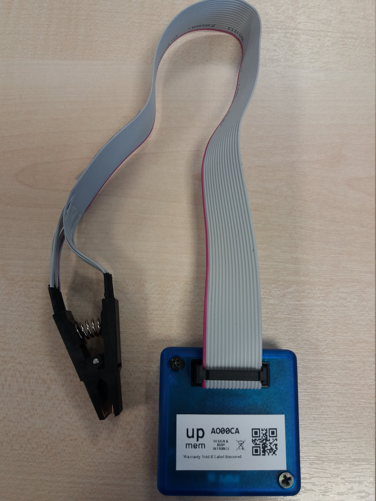

BIOS Flashing
Save the initial BIOS image on the external laptop using flashrom and the test clip. It is mandatory to disconnect the AC Power plug from the server while connecting the test clip to the flash chip.
First, open the server:
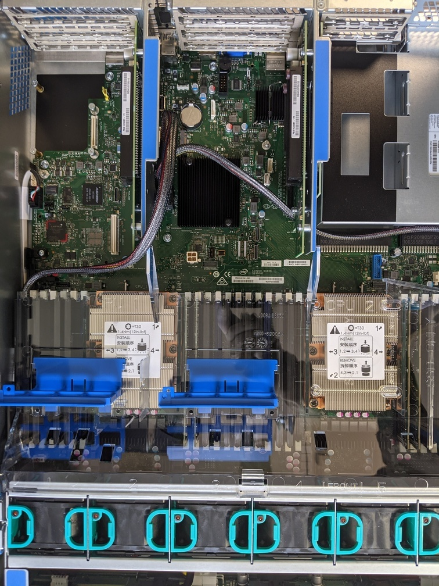
You have to remove the left PCI expander as shown below:
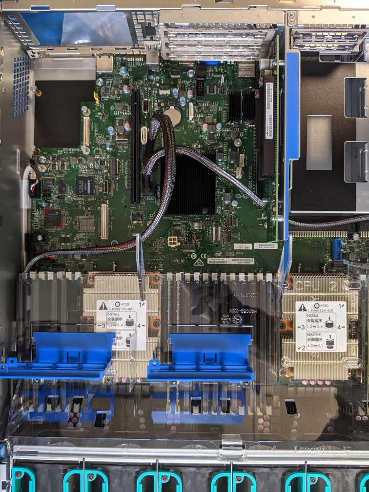
Then you have to locate the flash chip:
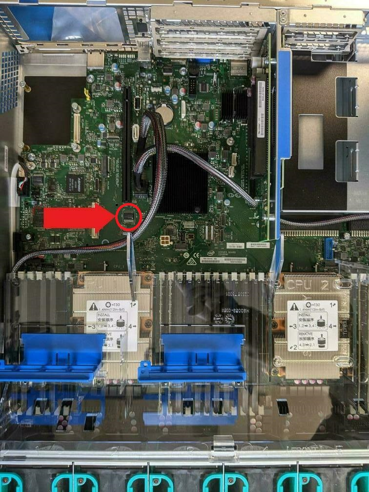
Finally, setup the test clip: the red wire must be at the opposite of the DIMMs (if the test clip is not the same as the one in the image, the corresponding wire will be indicated on the clip).
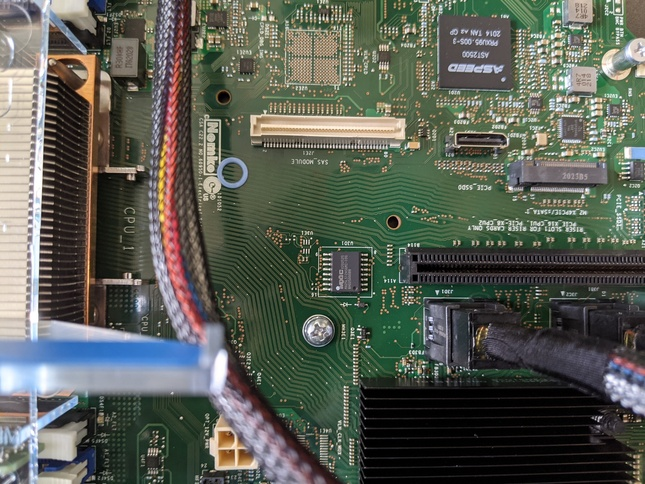
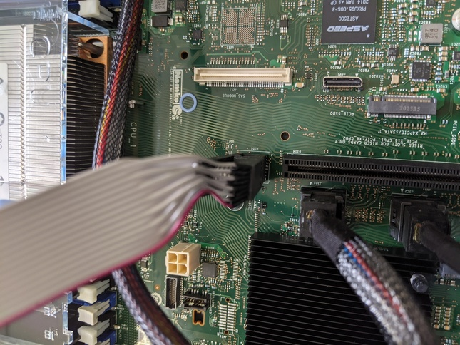
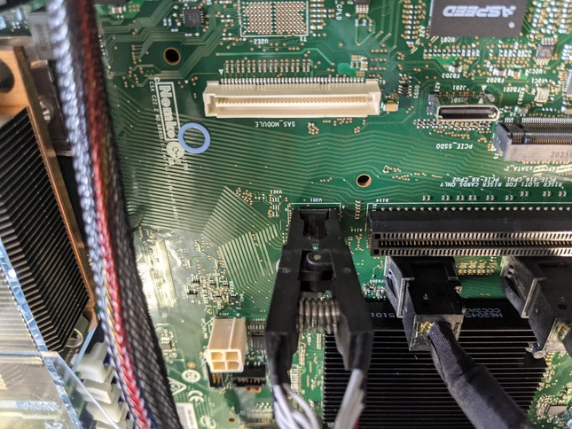
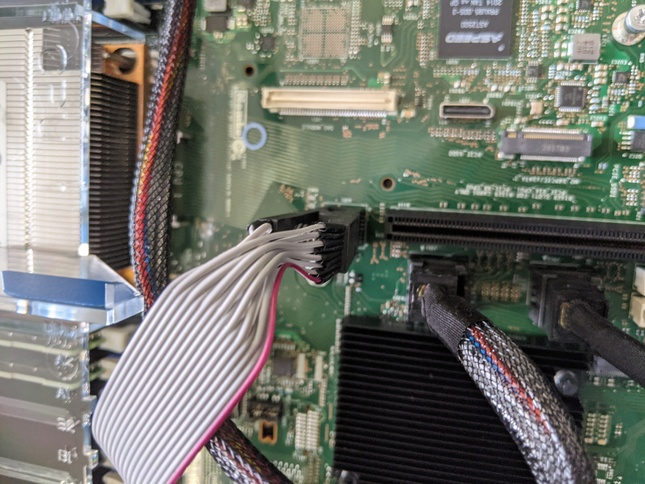
Connect the flash device to the laptop using the USB cable, and launch the following command to read the flash content. Note that this requires root privilege:
$ sudo ./upmem-bios-configure.py --dump-bios BIOS_ORIGINAL.bin
The following output should appear:
Using clock_gettime for delay loops (clk_id: 1, resolution: 1ns). Connected to STLink V3 with bridge FW version: 4 SCK frequency set to 12000 kHz Found Macronix flash chip "MX66L51235F/MX25L51245G" (65536 kB, SPI) on stlinkv3_spi. No data in flash context! Reading flash...
If the following error happens, you should try to setup the test clip again:
Using clock_gettime for delay loops (clk_id: 1, resolution: 1ns). Connected to STLink V3 with bridge FW version: 4 SCK frequency set to 12000 kHz No data in flash context! No EEPROM/flash device found.
Wait for flashrom to finish, remove the test clip, connect the AC power plug back in.
Prepare the UPMEM BIOS image:
$ ./upmem-bios-configure.py --set-mac --original-bios BIOS_ORIGINAL.bin BIOS_UPMEM.bin
Download the latest firmware from Intel website: https://downloadcenter.intel.com/download/29753/Intel-Server-Board-S2600WF-Family-BIOS-and-Firmware-Update-Package-for-UEFI?v=t. As of this writing, the latest version is 02.01.0013.
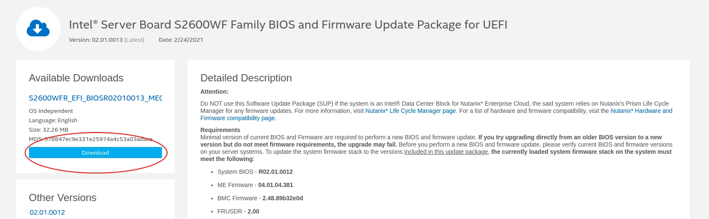
Remove the test clip and install the firmware to the server using the USB flash drive. Follow the instructions provided in General installation procedure of the above link.
Press any key to start the update process:
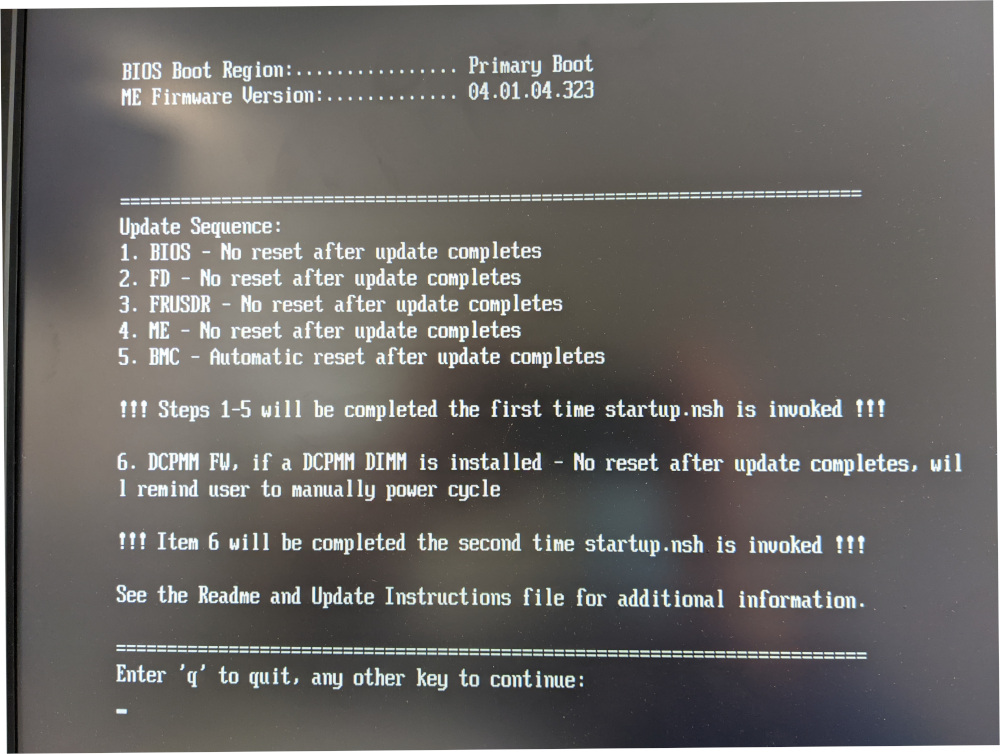
When asked, you should only flash SDR, not FRU (type 1).
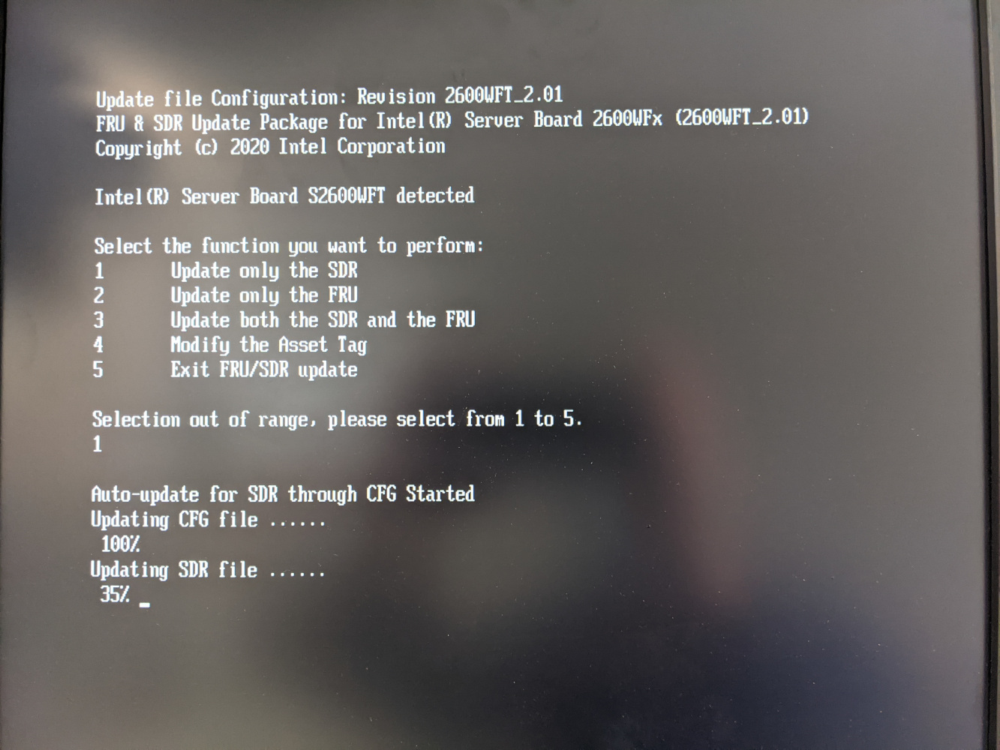
Power off the server and disconnect the AC Power plug. Using the external laptop and the test clip, flash the new BIOS image. Please note that this operation will take around 5 minutes:
$ sudo ./upmem-bios-configure.py --flash-bios BIOS_UPMEM.bin
Remove the test clip and power on the server. Once up, download the syscfg tool from https://downloadcenter.intel.com/download/29693/Save-and-Restore-System-Configuration-Utility-SYSCFG-?v=t and unzip its content. Then launch the following command:
$ sudo ./syscfg /fan 1 100
Update kernel parameters. To do so, edit /etc/default/grub:
$ vim /etc/default/grub GRUB_CMDLINE_LINUX="intel_idle.max_cstate=1 iomem=relaxed"
And update grub configuration files:
$ sudo update-grub
or
$ sudo grub2-mkconfig -o /boot/grub2/grub.cfg
Power off the server in order to install the UPMEM DIMMs inside the server, abiding by the usual DIMM population rules (described here https://www.intel.com/content/www/us/en/support/articles/000055509/server-products/server-boards.html) and the following rule: “legacy” and UPMEM DIMMs cannot be mixed inside a channel. For simplicity, we advise you to respect the following population for legacy DIMMs:
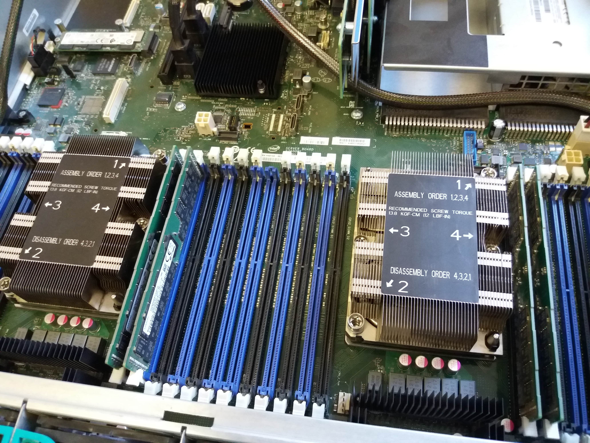
The rest of memory slots can be populated with UPMEM DIMMs.
Set up the permissions according to Permissions Requirements.